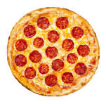

A PIZZA

Making pizza at home is simple and rewarding! Start with a basic dough made from flour, yeast, water, and salt. After kneading and letting it rise, roll it out into a round shape. Preheat your oven to a high temperature. Spread a layer of tomato sauce over the dough, leaving a small border for the crust. Add your favorite toppings, such as shredded mozzarella cheese, pepperoni, bell peppers, and olives. Bake for about 12-15 minutes until the crust is golden and the cheese is bubbly. Let it cool slightly before slicing, and enjoy your homemade pizza!
ingredients
- flour- 2 to 3cups
- warm water - 1 cup
- active dry yeast - 2 teaspoons
- olive oil - 2 tablespoons
- sugar - 1 teaspoon
- salt - 1 teaspoon
- Tomato sauce or crushed tomatoes - 1 cup
- Garlic (optional) - 1 clove, minced
- Dried oregano - 1 teaspoon
- for the toppings we are going to use Mozzarella cheese 1-2 cups, shredded,Pepperoni, sausage, or other meats,Vegetables like bell peppers, onions, mushrooms, olives, etc. and you can add Fresh basil if you want them
preparation
prepare the dough:
- activation of the yeast:in a small bowl mix 1 cup of warm water, 1 teaspoon of sugar, and 2 teaspoon of active dry yeast, let the mixture sit for about 5 minutes until it is frothy
- mix the dry ingredients:in a large bowl mix 2 cups of flour(you can add more if the dough is sticky) and 1 teaspoon of salt
- combine the wet and dry ingredients:make a well in the flour mixture and pour in the activated yeast mixture and two tablespoons of olive oil then stir until rough dough forms.
- kneed the dough:transfer the dough to floured surface and kned for 7-10 minutes until it beomes smooth and elastic.
- let the dough rise:place the dough in a lightly oiled bowl, cover it with a damp towel, and let it rise for about 1-1.5 hours until its double the size
prepare the sauce:
- in a small bowl, mix 1 cup of tomato sauce with one clove of minced garlic,1 teaspoon of dried oregano, and a little salt and pepper to taste
- stir in 1 tablespoon of olive oil and set aside
Preheat the oven:
preheat the oven to its highest setting, typically 245C to 260Cshapen the dough:
- once the dough has risen punch it down to release the air.
- roll the dough out on a floured surface into a round pizza shape
Add the Sauce and Toppings:
- Transfer the rolled-out dough onto a pizza stone or baking sheet.
- Spread an even layer of your prepared pizza sauce over the dough, leaving a small border for the crust.
- Sprinkle mozzarella cheese (1-2 cups) on top.
- Add your choice of toppings, such as pepperoni, vegetables, or other meats.
- If desired, add fresh basil leaves after baking for a fresh touch.
bake the pizza
- Place the pizza in the preheated oven.
- Bake for 12-15 minutes, or until the crust is golden brown, and the cheese is bubbly and slightly browned.
serve and enjoy
- Remove the pizza from the oven and let it cool for a few minutes.
- Slice and serve your delicious homemade pizza!